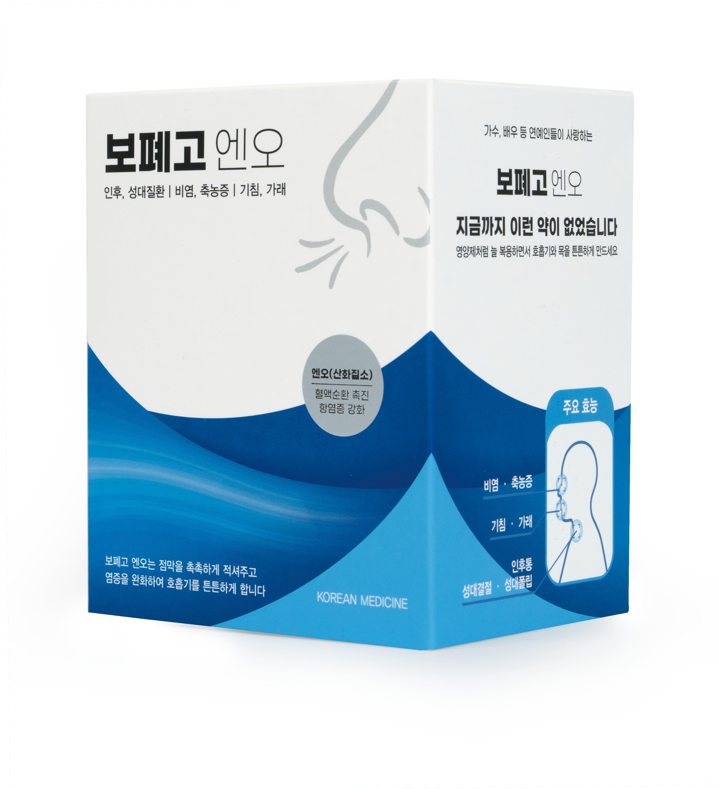

인후·성대질환 | 비염·축농증 | 만성 기침·가래 관리에 도움을 줍니다.
호흡기 점막을 촉촉하게 적시고 염증 완화를 보조하여 답답한 호흡기를 편안하게 지켜드립니다.

미세 순환을 돕고 염증 완화를 보조하여, 답답한 호흡기의 본질적인 환경 개선을 지원합니다.
마르고 건조해진 인후두와 기관지 점막을 윤택하게 하여, 외부 요인에 대한 방어력을 기르는 데 도움을 줍니다.
길경, 대청엽, 금은화, 연교, 맥문동, 오미자 등 순한 약재로 조제되어 편안하게 복용하실 수 있습니다.
한의사 연구그룹의 성분 배합 연구, 처방 임상 사례, 상세 FAQ 등 제조사 공식 정보 원문을 직접 확인하실 수 있습니다.
말, 강의, 서비스직 등 직업적으로 성대와 인후두의 보호가 필요하신 분
건조한 목, 떨어지지 않는 잔기침과 가래로 일상생활이 불편하신 분
답답한 코 막힘이나 노란 콧물, 후비루(코가 뒤로 넘어가는 증상)가 고민이신 분
평소 폐나 기관지가 건조하여 환절기 호흡기 관리가 필요하신 분
보폐고 엔오는 만성적인 기침과 가래, 비염, 축농증, 인후염 등으로 불편함을 느끼시는 분들이나, 말을 많이 하는 직업(교사, 강사 등)으로 성대 보호가 필요하신 분들의 호흡기 점막 보습을 돕는 맞춤 한약입니다.
짜 먹기 편한 스틱 액상 형태로 조제되어 언제 어디서나 간편하게 드실 수 있습니다. 성인 기준 하루 1~2포 복용을 권장하며, 원장님의 진단에 따라 개인별 복용 횟수와 시기를 상세히 안내해 드립니다.
네, 가능합니다. 원장님과의 꼼꼼한 전화 진료를 통해 환자분의 호흡기 증상, 병력, 체질을 확인한 후, 개인에게 맞게 처방하여 안전하게 자택으로 택배 발송해 드리고 있습니다.
보폐고 엔오는 원장님의 세밀한 진단(대면/비대면) 후 처방되는 맞춤 전문 한약입니다.